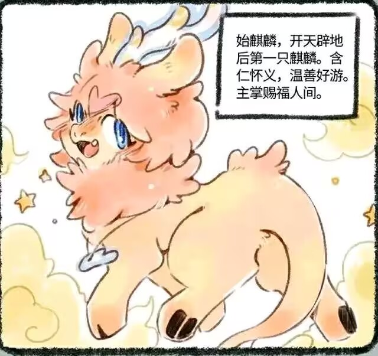
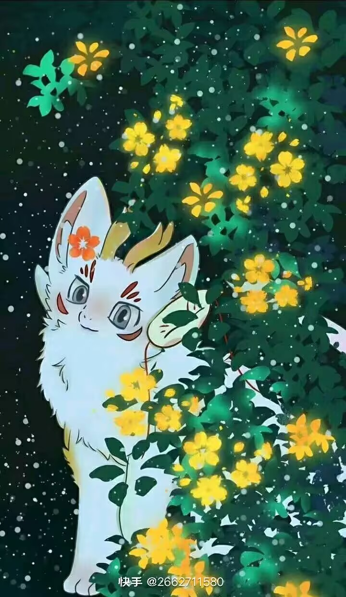
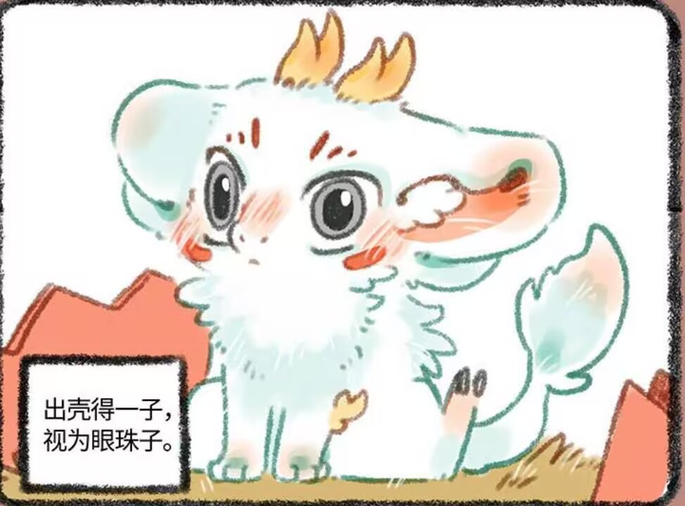
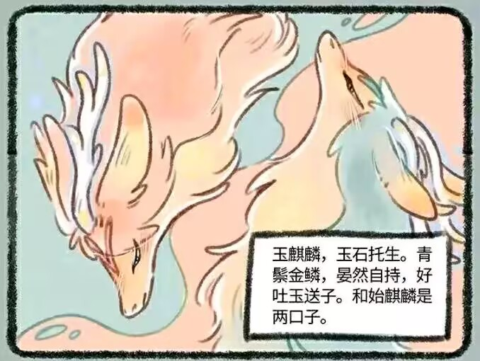
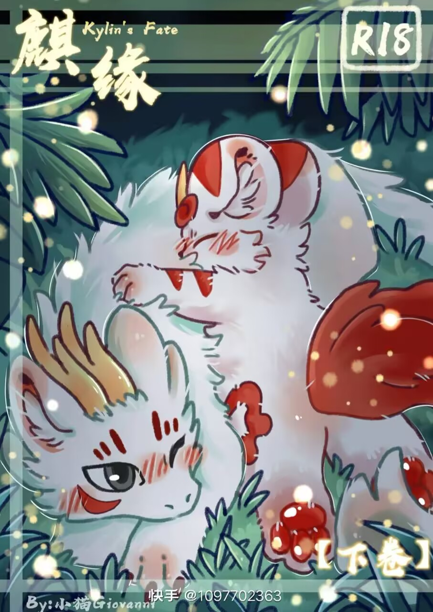
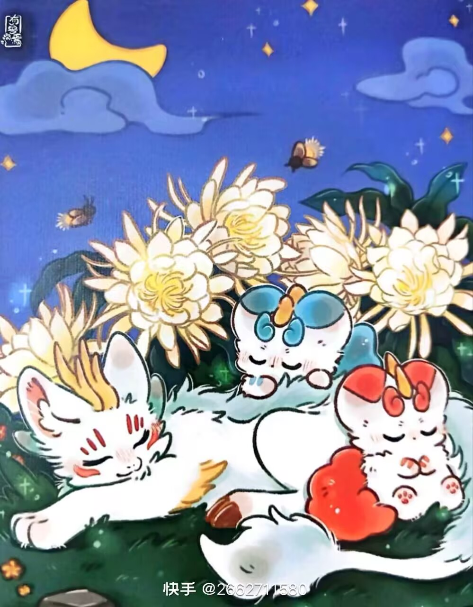

父亲 · 始麒麟
始麒麟是我的阿爹，也是麒麟一族中与我血脉相连的重要存在。 他和阿娘一起生了我。阿爹阿娘对我很好，只是我一个人好无聊，我想要个弟弟。
我曾因为孤独而想要一个弟弟，这份愿望并不是因为父亲给得不够， 恰恰是因为我知道家有多好，才想把这份热闹也分给另一个小家伙。
“父亲是我故事的起点，也是我走远以后仍然记得的来处。”
A STORY TOLD BY ME
温柔的鹿 · 想要弟弟的哥哥
如果要我介绍自己，我大概会先说：我是一只四不相。 我喜欢安静的风、熟悉的家，也很珍惜每一个愿意和我并肩走一段路的朋友。 只是很久以前，我心里一直藏着一个小小的愿望—— 要是能有一个弟弟就好了。
“我曾经很想要一个弟弟，但在那之前，我一直是父母最珍爱的孩子。”↓继续听我说

ME, IN MY OWN WORDS
我有自己的脾气、自己的笨拙，也有不愿轻易说出口的认真。 在和小梅花小蓝圈相处的时光里，我慢慢成长， 学会了在热闹的山海间，守住一份温柔而坚定的心。

THE ROAD I CAME FROM
我是始麒麟和玉麒麟的长子，也是很长一段时间里唯一的孩子。 父母给了我安稳的家，可独生子的日子有时还是太安静了。 我很早就想要一个弟弟，甚至做过泥巴弟弟，也认真想象过如果家里多一只小兽， 日子会不会热闹一点。
这一路上，我还是那个会想家的四不相，也还是会把重要的人放在心里。 后来，我遇见了新的朋友，也终于有机会把“想要弟弟”这句话说给别人听。
“我不是因为没有家才想要弟弟，正因为知道家是什么，才想把它分享给别人。”
MY PARENTS, MY BEGINNING
我是始麒麟和玉麒麟的长子，是世间第一只吉祥麒麟。 他们一个是我的父亲，一个是我的母亲，陪我走过最初的岁月， 也让我一直记得自己从哪里来。

始麒麟是我的阿爹，也是麒麟一族中与我血脉相连的重要存在。 他和阿娘一起生了我。阿爹阿娘对我很好，只是我一个人好无聊，我想要个弟弟。
我曾因为孤独而想要一个弟弟，这份愿望并不是因为父亲给得不够， 恰恰是因为我知道家有多好，才想把这份热闹也分给另一个小家伙。
“父亲是我故事的起点，也是我走远以后仍然记得的来处。”

玉麒麟是我的阿娘。她曾告诉我：神兽是天地遗落的光， 死后会重新回到天地间，那些光点是即将归于天的阳气。 这些话一直留在我的记忆里，也让我在面对离别时，多了一点温柔和敬畏。
我曾经做过泥巴弟弟，也把“想要弟弟”的愿望说得很认真。 阿娘大概早就看出了我的孤单，所以我一直记得她教我的道理： 好好珍惜眼前，也好好珍惜每一个会回到身边的人。
“母亲教我的，不只是怎么长大，还有怎样理解来去与重逢。”
THE BROTHERS I MET
我一直想要一个弟弟。后来遇见辟邪和天禄，我把他们放进了自己的家人名单里， 还给他们取了两个只有我会这样叫的小名。

那次遇见辟邪，是在他从山崖坠落的时候。我接住了他，把他带了回来。 他一心只想着去救自己的弟弟天禄，而我却在见到他以后，立刻想起了自己 想要一个弟弟的愿望。
我给他取名叫“小梅花”，还想让他留下来陪我。辟邪沉默、稳重， 很多事情都习惯自己扛着；可在我心里，他仍然是那个让我第一次觉得 “弟弟真的可以来到身边”的小兽。
“小梅花，你已经是我的弟弟了。”

天禄是辟邪的弟弟，性格和辟邪完全不同：他爱吃、爱玩，也常常把周围弄得 热热闹闹。和他相处时，我总要多留意一点，因为他一不小心就会跑到新的麻烦里。
我叫他“小蓝圈”。这个名字是我给他的亲昵称呼，可他还是那个独一无二的天禄。 他有自己的记忆、自己的选择，也有和辟邪之间谁也替代不了的兄弟情分。 我能做的，就是在他们需要的时候陪在旁边。
“小蓝圈，慢一点跑，我会跟着你的。”
THE NEXT CHAPTER
明天也许还会有新的麻烦、新的风景来到这里。 但我已经不再害怕孤单。因为我知道，我已经不再是一个人， 而我想做的，就是带着这份陪伴，继续温柔又勇敢地往前走。
← 回到山海间